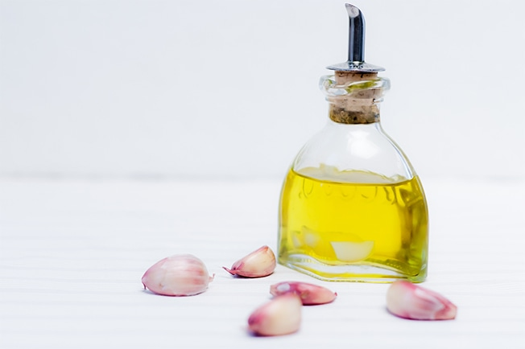
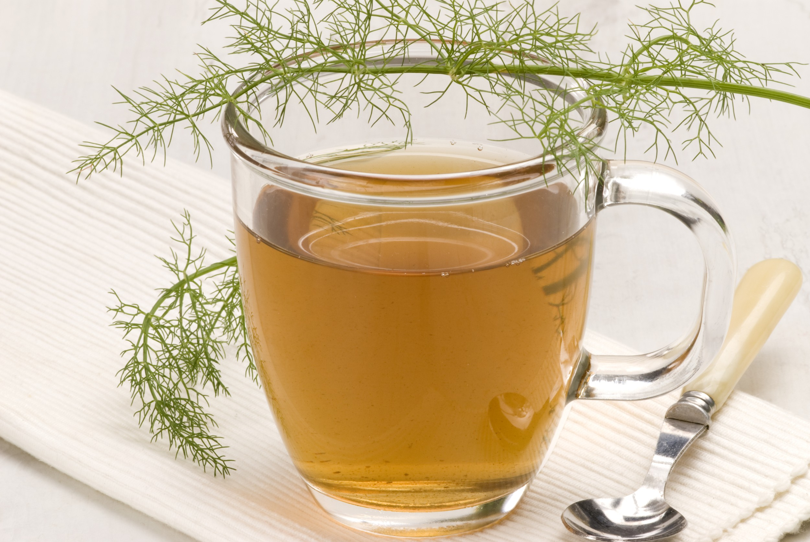
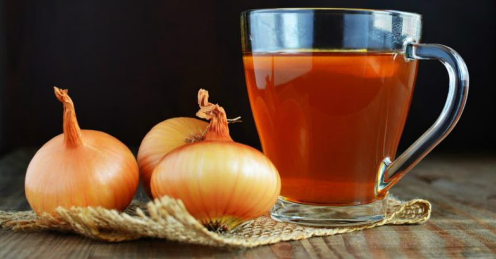
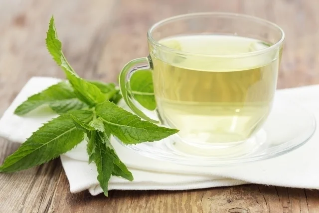

Um ótimo remédio caseiro para vermes é o leite aromatizado com folhas de hortelã-pimenta, uma planta medicinal com ação vermífuga natural que mata e elimina os parasitas.
Ingredientes:
4 talos e 10 folhas verdes de hortelã-pimenta;
100 ml de leite desnatado;
1 colher de mel.
Modo de preparo:
colocar o leite e a hortelã numa panela até ferver, depois deixar a mistura esfriar e acrescentar o mel, o leite deve ser tomado morno 1 hora antes do café da manhã, e o processo deve ser repetido 7 dias depois, totalizando 2 doses.
2. Azeite de alho:

O alho é ótimo para eliminação dos vermes intestinais e pode ser consumido cru, mas também pode ser incluído na alimentação diária na forma de azeite aromatizado.
Ingredientes:
500 ml de azeite;
1 ramo de alecrim;
3 cabeças de alho, separadas em dentes descascados.
Modo de preparo:
em uma garrafa de aproximadamente 700 ml coloque os dentes de alho descascados e suavemente amassados, depois, acrescente o azeite e o ramo de alecrim. Tampe devidamente e mantenha guardado em local seco e livre de umidade durante 10 dias. Use esse azeite para cozinhar os alimentos e temperar saladas ou sopas.
3. Chá de erva-doce:

A erva-doce também tem ação vermífuga, sendo útil para complementar o tratamento contra os vermes intestinais.
Ingredientes:
1 colher de sementes de erva-doce;
1 xícara de água fervente.
Modo de preparo:
colocar as sementes na água fervente e deixar repousar por 8 minutos. Coar e tomar a seguir, depois das refeições.
4. Xarope de cebola:

Trata problemas respiratórios em geral, mas é especialmente indicado para aliviar sintomas de sinusite e como descongestionante pulmonar. Também é antifúngico e bactericida.
Ingredientes:
1 cebola grande;
1 xíc. de açúcar mascavo (ou rapadura ralada);
3g de cravo-da-índia
Modo de preparo:
Corte as cebolas em rodelas finas, misture o cravo-da-índia e o açúcar mascavo, na panela, ponha uma camada dessa mistura e depois de cebola. Repita até que a última camada seja novamente da mistura, leve ao fogo brando a panela tampada. Ao levantar fervura, mantenha no fogo por mais cinco minutos e desligue. Após esfriar, coe e embale num vidro de âmbar. Conserve na geladeira por até 1 mês;
5. Chá de mastruz:

O chá de matruz, é um excelente remédio caseiro contra vermes porque tem ação vermífuga.
Ingredientes:
250 ml de água fervente;
1 colher de sopa de folhas e sementes de mastruz.
Modo de preparo:
Adicionar a planta à água fervente e deixar repousar por 10 minutos. Coar quando estiver morno e beber a seguir.